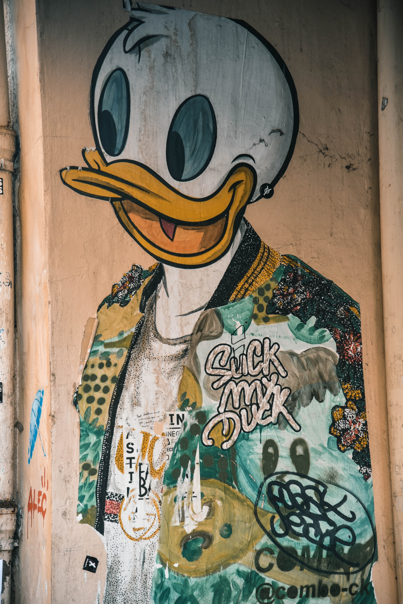

About me
Hi. I am Philip and I am a photographer. I have been travelling around the world since my early 20th. During my trips I got so amazed about the beautiful street arts that I have decided I will capture the best ones I see from everywhere I am.
Awards and Accolades
I'm delighted to have won both Gold and Highly Commended awards in the SSPP's (Society of Street and Portrait Photographers) international photo competition. Gold is the highest marking awarded, representing images of the highest possible standard.
Want to see more?
If you are just as amazed as me about these kind of art, and paintings, I have a weekly newsletter where I send the best photos I record to. You can find more information just click the button below.
Get in touch